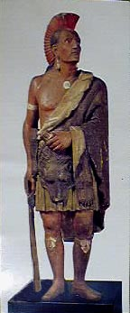

By Alan Moore
“There is no document of civilization which is not at the same time a document of barbarism.” In its title, “The Image Business,” the recent exhibition of shop and cigar store figures at the Museum of American Folk Art in New York evoked a continuity between these advertising devices of the 19th century city and the publicity methods of contemporary media society. These figures first became popular as antiques during the 1920s, when industrial culture switched emphases and began to become consumer culture, and advertising began the social discipline of desire in earnest using the methods of social psychology. Curator Ralph Sessions’ title flatters contemporary viewers that they are `wise’ to the functions of advertising. As well-schooled and canny participants in a full-blown consumer culture, this exhibition invites us to witness a kind of origin story, the personalized beginnings of modern commercial representation as embodied in these figures which once stood in front of shop doors. |  (Chief Blackhawk, artist unknown,c. 1848-1855) |
|
Trade figures, as they are called, were carved for urban businesses by artisans, many of whom had also carved figureheads for sailing ships. The figures are conceived in a vernacular tradition which parallels in wood the works in marble of European academic sculpture. The noble bearing, the grandeur of some of these figures signals the aspirations of their makers to emulate high art. This comportment and the strategic nudity of mid-century figures like Chief Blackhawk (ca. 1848-1855) recalls the Greco-Roman lineage of the noble savage. This classicized cigar store Indian might have worked uptown, as a bright polychromed participant in the dramatis personae of the beaux arts city, a different figure, the warm painted wood of commerce ever contingent among the cold white marble corps of architectural decorations signifying enduring civic virtues.
The exhibition traces the lineage of these figures, which evolved in part from 18th century personifications of continents and colonies bearing their trade goods as attributes of the New World’s “gifts” to the Old. Today these figures from the era before modern brand identities signify the bulk commodity, its growth, its transport, its historical origin. Since the figures fronting shops were often carved by the same artisans whose figureheads fronted ships, they have also come to seem the very embodiments of pre-industrial enterprise: emblems of transport and retail, the effigy attendants of 19th century getting and spending. The figures were not product-identified in the sense of modern brand identities, rather they were place-identified. As residents of commercial enterprises, they gave a kind of constancy to the changing cityscape, or a claim to constancy that borrowed authority from the claim to eternality of the beaux art sculpture. These figures bespeak an era of sacral advertising; as a vernacular tradition parallel to high cultural traditions of sculpture, they devolve in part from the cult figures of antiquity, standing up everywhere to signify the power of deities in cultic places. Together with the neo-classical nudes signifying values and qualities, these minor wooden deities of commerce cast their aegis over the city-scape of shops and clubs, saloons, theaters, and places of public exhibition, the spectacular culture of advertising display built on the recreated ruins of ancient cultic practice. Like the figures of antiquity, chief among the mysteries that gather around these trade figures are the behaviors they signify. They are relics of earlier systems of consumption, principally, of course, intoxicants like tobacco and liquor. The figures embody somehow a pretext, an explanation. They usher the consumer into an experience and a social environment connected with the use of the sot-weed and the grape. Unlike the introverted carefully cultivated field of hyper-self-consciousness underlying the rationalized 20th century consumption, the 19th century rituals of an extrovert consumption were disciplined by morality. Among the forest of figures in the 19th century city these of commerce were sirens of pleasure, street voices amidst a chorus now stilled, both admonishing and alluring, mixing with memory shards of Bible, classic texts, and sermons. I imagine these figures on every street corner, standing for a circuit of consumption, standing for inebriation, and the social valences of tobacco use, its boldness, elegance, emancipation, contentment. The Indian is a guide for the smoker who embraces an addiction of the lively, the man found with others in the saloon, the pool hall, the barber shop, theater and clubroom, the social spots men gathered. These figures of fun stood mute before the tobacco shop, outside the saloon, that the drunken might converse with them after leaving the banquet. . . A principal problem that this exhibition confronted, both in its installation and at a museum symposium, was that most of these ushers of inebriate experience are stereotypes. Many are racial caricatures, most notoriously the cigar store Indian warrior, the tobacco counter blackamoor, the tea shop Chinaman, and the bare-breasted Indian maid, Pocahontas, the brown body offered to the white conqueror, present as symbol of America since the continent’s discovery as Rayna Green (Smithsonian Institution) pointed out at the museum symposium. Africans and Indians were initially united in bondage as plantation labor. So the shop figures were really literal: they depict the subject peoples who worked conquered lands to bring forth the New World’s “gifts.” As well as commemorating labor, the Indians are also classic capitalist totems of the great socio-economic reversal colonialism entails; an image purporting to represent the spirit of the gift is appropriated to an iconography of money-based commerce. These figures, said Richard Long (Emory University), are “overwhelmingly the creation of white entrepreneurs.” “Buying into these figures,” said John Kuo Wei Tchen (New York University), was part of the Americanization process for new European immigrants. Just so does subscribing to racist attitudes `construct whiteness’; this “constitution of the self by consumption of the Other” as Tchen put it, remains at the heart of advertising psychology. Today these figures pop out, stick up, and bespeak a commercial culture founded on stereotypes. They remind us that white American solidarity, the melding of ethnicities and nationalities into the uniform category “American,” was achieved through leverage both social and economic against people of color. These shop figures worked within a structure of functional bigotry inscribed within consumer culture; they are part of the technic, the visual culture of racism, the foul oil that lubricates the American social order. |
|
|
Richard Long briefly recounted the caricatural tradition that began on the stage with the minstrel show, then was reproduced in visual images on sheet music for performance in the home. Minstrelsy, this “paradoxical form of entertainment,” began before the Civil War as whites imitating blacks, and finished (on the stage) early in this century as blacks imitating whites imitating blacks. In fact it continued and continues, both explicit and subducted in the comedy of Richard Pryor and Eddie Murphy, in the singing of Mick Jagger and Janis Joplin.
The continual regard of difference, linked to music, theater, and consumption of intoxicants, is essential to the constitution of American culture. The trade figures offer muted evidence of how this regard worked in American business. It was surely opportunistic, seizing upon incidents of the moment, trading on news, fads, magazines, and popular shows. The spectacle of commerce borrowed from the stage, from the circuit of official imagery, from whatever image system was out there working, to make a shop sign that would move those cigars. The process of figuring out a shop carving was of a piece with the same alchemy of advertising that surrounds the selection of the ideal manniken today. These enjoyers, the human image of “beauty-in-surroundings” that sells today’s restaurant, hotel, or gated community, that images peace and contentment as outward prettiness, is our surrogate “shop figure.” Rarely today is caricature used, based upon the particular, the image determined to be itself. Urban life is no longer a novelty, its grit and grotesquerie no commercial enticement. We are very significantly removed from understanding of what 19th century urban consumers found, in the very 19th century words of museum director Gerard Wertkin, “appropriately exciting” in a shop figure. |
|